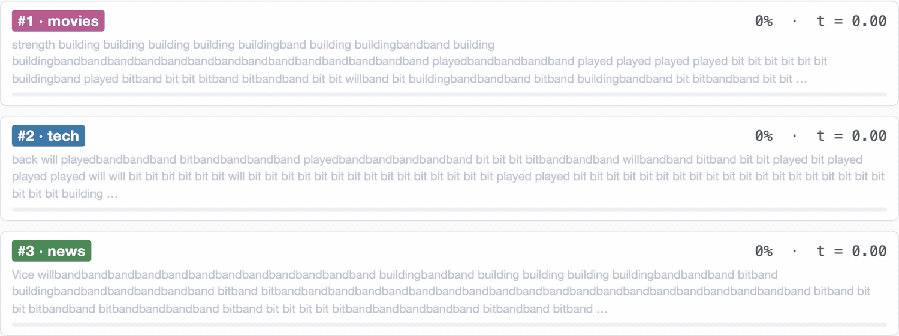

面向对象：AI 方向初学者
整理日期：2026-05-13
依据材料：机器之心文章、ELF 论文、官方 GitHub README
ELF 的全称是 Embedded Language Flows，中文可译为“嵌入式语言流”。它是一类基于 Flow Matching 的连续扩散语言模型。
这项工作的核心结论是：连续扩散语言模型并不是走不通。只要把生成过程尽量保持在连续的 contextual embedding 空间里，并且只在最后一步离散化成 token，连续路线也可以在扩散语言模型赛道里取得很强效果。
它的创新不是“第一次把扩散模型用于语言”，而是重新设计了连续扩散语言模型里最关键的接口问题：
文本最终必须输出离散 token，但生成过程是否必须一直受 token 空间约束？
ELF 的回答是：不必。中间过程可以在连续 embedding 空间里完成，最后一步再翻译成 token。
扩散模型在图像、视频、音频生成中很成功，因为这些数据天然可以表示为连续数值。比如图像可以看作像素矩阵或 latent 向量，模型可以方便地做：
干净图像 -> 加噪 -> 噪声
噪声 -> 去噪 -> 干净图像但语言不同。语言表面上是离散 token：
我 喜欢 机器 学习模型词表里只有一个个编号，例如
我=101、喜欢=2387。token
之间没有“半个我”“三分之一喜欢”这种连续状态。
这就造成一个基本矛盾：
过去的扩散语言模型大致分成两条路线：
| 路线 | 代表思路 | 扩散过程主要发生在哪里 |
|---|---|---|
| 离散 DLM | MASK、离散类别分布、token 替换 | token / MASK / categorical space |
| 连续 DLM | token embedding、simplex、latent 表示 | embedding 或连续松弛空间 |
ELF 属于第二条路线，但它对“连续”做得更彻底。
token 空间像一个词典。每个词或子词都有一个编号：
token id: [1287, 4269, 1523, ...]编号之间没有自然的平滑路径。1287 和 1288
不一定语义相近。
embedding 是一串实数向量：
token embedding: [0.13, -0.42, 1.07, 0.08, ...]向量可以加噪声、插值、移动和去噪。比如从一个随机向量逐步移动到一个代表句子语义的向量，是数学上自然的事情。
因此，所有 Transformer 语言模型内部都会用 embedding。问题不在于“有没有 embedding”，而在于：
扩散过程本身操作的是 token 状态，还是自由连续向量？
以 masked diffusion language model 为例，它会把原句逐步 mask 掉，再训练模型恢复：
原句：我 喜欢 机器 学习
加噪：我 [MASK] 机器 [MASK]
再噪：[MASK] [MASK] 机器 [MASK]训练目标类似：
输入：我 [MASK] 机器 [MASK]
输出：喜欢、学习这类模型内部当然也会把 token id 变成 embedding，因为 Transformer 只能处理向量。但扩散变量本身仍是 token、MASK 或词表上的类别分布。
另一类方法会做：
token -> embedding -> 加高斯噪声 -> 去噪 embedding这看上去和 ELF 很像。但很多前人方法会在中间步骤加入 token 级约束，例如：
所以它们“用了 embedding”，但生成轨迹经常像这样：
连续向量 -> 检查它像不像某个 token -> 再继续去噪ELF 认为这种中途离散化或 token 监督会限制连续扩散模型的自由度。
还有一些方法把文本编码成 latent，再在 latent 空间扩散：
token -> encoder -> latent
latent diffusion
latent -> separate decoder -> token这条路也在连续空间里做生成，但通常要额外训练一个 decoder，把 latent 还原成文本。ELF 的设计目标之一就是避免这个额外模块。
ELF 的默认做法是先用一个冻结的 T5 encoder，把文本变成 contextual embeddings。这里的 contextual embedding 不只是单个 token 的查表向量，而是带上下文信息的连续表示。
训练时，给定干净 embedding x 和高斯噪声
epsilon，ELF 构造连续中间状态：
z_t = t * x + (1 - t) * epsilon其中：
t=0 时，z_t 接近纯噪声；t=1 时，z_t 接近干净文本 embedding；z_t 都是实数向量，不是 token id。采样时，ELF 从随机噪声开始，沿着模型学到的速度场逐步走向干净 embedding：
z0: 高斯噪声向量
z1: 稍微像文本 embedding 的向量
z2: 更像文本 embedding 的向量
...
zt: 接近干净文本 embedding
final: decode 成 token在最后一步之前，ELF 不做以下操作：
argmax 成 token；这就是“生成过程在连续 embedding 空间”的含义。
官方仓库还给出了一个生成轨迹示意：随着时间 t 从 0 走到
1，文本从不成形的预测逐步被修正为更流畅的句子。这张图不是说模型每一步都已经输出最终
token，而是用可视化方式展示连续去噪过程带来的文本可读性提升。

官方仓库中的概念图展示了 ELF 的核心路径：橙色点表示连续 embedding 空间中的数据，紫色轨迹表示从噪声流向干净 embedding 的去噪过程，离散化只发生在最后一步。
flowchart LR
A["文本 token"] --> B["T5 encoder"]
B --> C["干净 contextual embedding x"]
C --> D["加噪得到 z_t"]
D --> E["ELF denoise 模式<br/>Flow Matching / MSE"]
E --> F["连续 embedding 逐步变干净"]
F --> G["最后一步 ELF decode 模式"]
G --> H["unembedding"]
H --> I["输出 token"]ELF 的网络有两种模式：
| 模式 | 发生时间 | 学习目标 |
|---|---|---|
| denoise | 大多数中间步骤 | 预测干净 embedding，用 MSE loss |
| decode | 最后一步 | 映射回 token，用 cross entropy loss |
训练时约 80% 的样本用于 denoise，20% 用于 decode。两个模式共用同一个网络，只靠 mode token 区分当前任务。
这是最关键的创新。前人很多连续 DLM 在中途就反复和 token 空间发生关系。ELF 则尽量保持中间轨迹自由连续：
前人很多方法：
embedding -> 去噪 -> token 约束 -> 去噪 -> token 约束 -> ... -> token
ELF：
embedding -> 去噪 -> 去噪 -> 去噪 -> ... -> 最后一次变 token这让 Flow Matching 能更像在图像生成中那样工作。
latent diffusion language model 往往需要额外 decoder。ELF 用同一个网络承担 denoiser 和 decoder 两个角色：
flowchart TD
N["同一个 ELF 网络"] --> D1["denoise 模式<br/>连续空间去噪"]
N --> D2["decode 模式<br/>最终转成 token"]这样系统更简单，也避免额外训练阶段。
ELF 不是传统 DDPM 式语言扩散，而是用连续时间 Flow Matching。直观理解，它学习的是从噪声流向干净 embedding 的“速度场”。
这带来的好处是：可以自然使用 ODE/SDE sampler，并且更接近现代图像/视频生成里的 flow-based 设计。
CFG 在图像扩散里很重要，用来控制生成质量和多样性。但在离散 token 空间里，CFG 不够自然。
ELF 中间状态是连续向量，所以 CFG 更容易搬过来。论文还把 self-conditioning 作为条件信号：模型上一轮预测的干净 embedding，会帮助下一轮预测。
官方仓库给出的系统级对比如下：

图中要点可以概括为：
Gen. PPL 24.1；45.2B effective training tokens；500B+ token 量级；需要注意：机器之心原文中写到“320 步采样达到困惑度 24”，但论文和官方 README 均为 32 steps。这里应以论文和官方 README 为准。
ELF 想回答的问题不是“扩散语言模型有没有人做过”。这个方向此前已经有很多工作。ELF 真正关心的是：
连续扩散语言模型过去效果不如离散 DLM，是因为语言本质上离散，还是因为连续路线设计得不够好？
论文的答案是：连续路线并不是天然不行。
更具体地说：
那么连续 DLM 可以在中等规模实验中超过多种离散和连续 DLM baseline。
可以用三个模型类比来理解：
| 模型范式 | 类比 |
|---|---|
| 自回归 GPT | 从左到右逐字打字 |
| 离散 DLM | 在一排空格里反复填词、擦掉、再填 |
| ELF | 先形成一团连续的“句子语义草稿”，不断修清楚，最后翻译成文字 |
ELF 的核心差异是：
前人往往在生成过程中反复回到 token/词表空间；
ELF 尽量把整个生成过程留在连续 embedding 空间；
最后一步才输出 token。因此，ELF 的意义不是证明它已经能替代 GPT、Claude 或 Gemini 这类大规模自回归模型，而是证明：
在扩散语言模型这个研究赛道里，连续 embedding 路线重新变得有竞争力。
article_text.txtELF_Embedded_Language_Flows.pdfELF_README.md